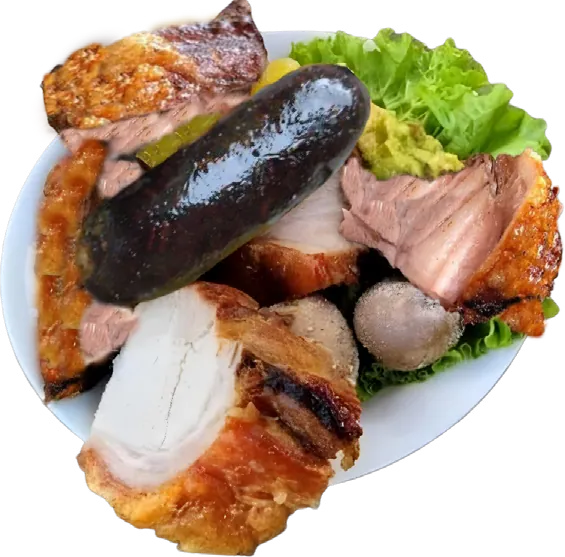
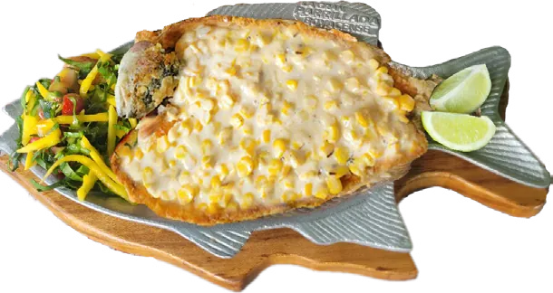
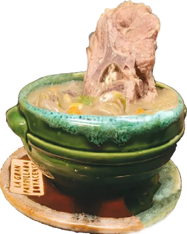
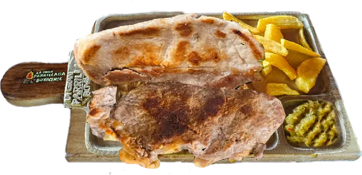
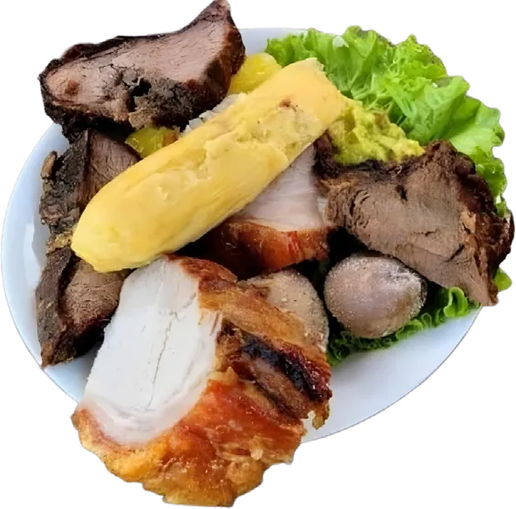
Aquí la parrilla se prende cada fin de semana desde 2015. Cuchuco longaniza, rellena y arepa boyacense, como se come en Boyacá, sumercé.
La auténticaparrillada
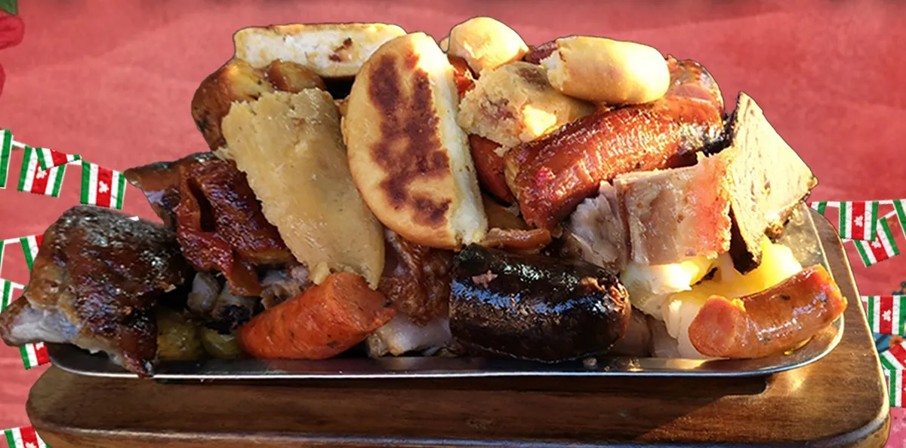
Cortes de res y cerdo, longaniza amarilla y roja, chorizo artesanal y rellena, con todo lo que la acompaña en Boyacá. Para uno, para dos o para toda la familia.
- Res
- Cerdo
- Longaniza amarilla
- Longaniza roja
- Chorizo artesanal
- Rellena
- Arepa boyacense
- Envuelto de queso y bocadillo
- Plátano maduro
- Papa criolla
- Papa salada
- Yuca sudada
- Guacamole
- JuniorPersonal
- MedianaPara compartir
- GrandePara compartir
La carta
Toque cualquier plato y le llega el pedido listo a WhatsApp.
Sopas típicas
Como en la casa de la abuelaCuchuco de trigo
Sopa campesina de trigo molido con espinazo de cerdo, papa, habas y arvejas.
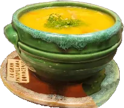
Mondongo
Sopa de menudo cocinada lentamente con papa pastusa, habas, cilantro y especias.
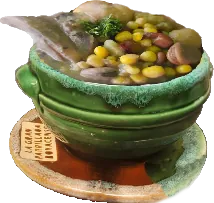
Mute de mazorca
Sopa tradicional que celebra el sabor y la textura de la mazorca en cada cucharada.
La Parrillada
plato insignia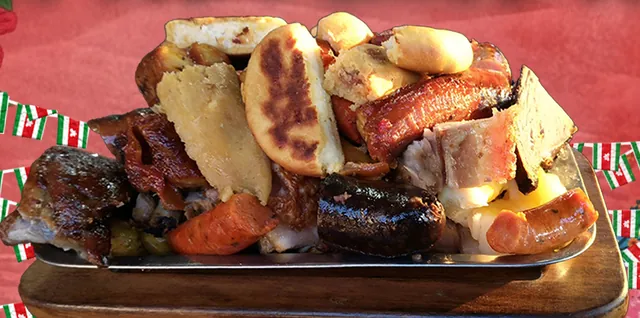
Auténtica Parrillada Boyacense
Junior, Mediana o Grande. Res, cerdo, longaniza amarilla, longaniza roja, chorizo artesanal, rellena, arepa boyacense, envuelto de queso y bocadillo, plátano maduro, papa criolla, papa salada, yuca sudada, guacamole.
La Barra de Tota
Truchas y pescados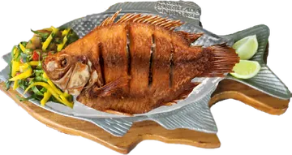
Mojarra frita
Mojarra fresca frita hasta lograr un dorado perfecto, tierna y jugosa por dentro.
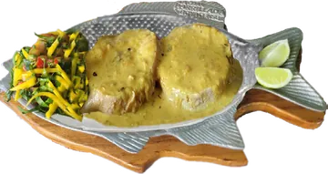
Bagre en salsa
Bagre fresco cocido en salsa con especias, cebolla y tomate.
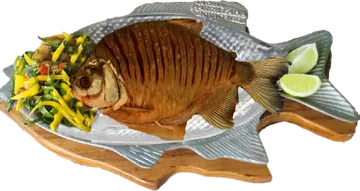
Cachama frita
Cachama frita: crujiente por fuera y suave por dentro.
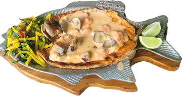
Trucha marinera
Filete de trucha fresca bañado en cremosa salsa marinera con frutos del mar.
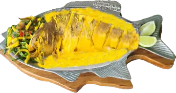
Viudo de capaz
Capaz fresco cocido lentamente en un sudado con especias.
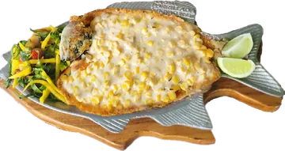
Trucha boyacense
Filete de trucha fresca en suave y cremosa salsa de mazorca.
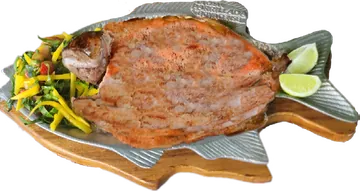
Trucha al ajillo
Filete de trucha fresca con una exquisita y cremosa salsa de ajo.
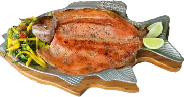
Trucha a la plancha
Filete de trucha fresca a la plancha para resaltar su sabor natural.
Nuestras carnes
Asadas a la perfección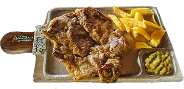
Churrasco
Corte jugoso de res, asado a la perfección para resaltar su sabor y ternura.
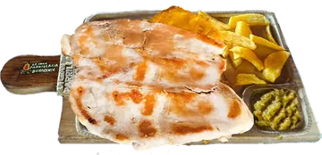
Lomo de cerdo
Corte tierno y jugoso de cerdo, cocinado para resaltar su sabor natural.
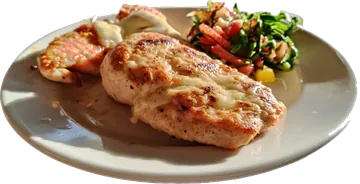
Pechuga asada
Pechuga de pollo tierna y jugosa, asada a la perfección.
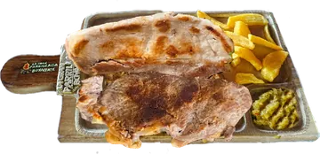
Tabla churrasco y lomo
Una dupla irresistible: jugoso churrasco de res y tierno lomo de cerdo.
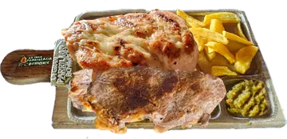
Tabla churrasco y pechuga
Jugoso churrasco de res y tierna pechuga de pollo asada, servidos juntos.
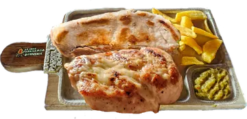
Tabla lomo y pechuga
Tierno lomo de cerdo y pechuga de pollo asada en un solo plato.
Picadas de carne
450 g para disfrutar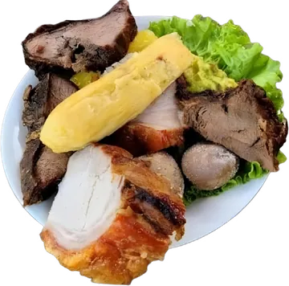
Picada carne mixta
450 g de carne de res y cerdo con rellena tradicional, papa salada, yuca sudada y guacamole fresco.
Picada carne de cerdo
450 g de carne de cerdo con rellena tradicional, papa salada, yuca sudada y guacamole fresco.
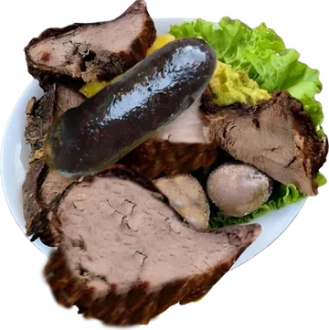
Picada carne de res
450 g de jugosa carne de res con rellena tradicional, papa salada, yuca sudada y guacamole fresco.
Para acompañar
- Arepa boyacense$3.500
- Envuelto de mazorca$4.000
- Plátano maduro$7.000
- Chorizo artesanal 100 % cerdo$8.000
- Longaniza amarilla$8.000
- Longaniza roja$8.000
- Rellena boyacense$4.000
- Papa salada$5.000
- Papa criolla$5.000
- Yuca sudada$5.000
- Guacamole$7.000
- Patacón$5.000
- Arroz$4.000
- Ensalada$5.000
- Papa a la francesa$4.000
Bebidas
- Preparada especial de la casa (jarra)$12.000
- Cerveza Club Colombia$6.000
- Cerveza nacional$5.000
- Gaseosa personal$4.500
- Jugo natural en agua$6.000
- Jugo natural en leche$7.000
- Gaseosa Postobón 1.5 L$9.500
- Agua en botella$3.000
Precios en pesos colombianos. Pueden cambiar sin previo aviso.

Así se velo boyacense
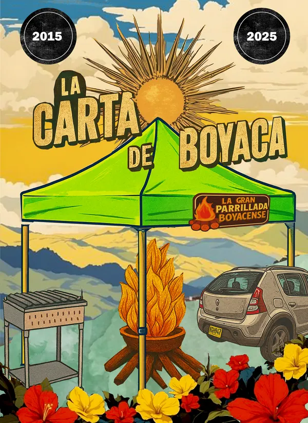
- 2015Desde
- 10+Años
- 40+Platos y bebidas
Venga aSogamoso
Horario Sáb y dom
- LunesCerrado
- MartesCerrado
- MiércolesCerrado
- JuevesCerrado
- ViernesCerrado
- SábadoAbierto
- DomingoAbierto
En diciembre abrimos todos los días. Confirme por WhatsApp.
Preguntasfrecuentes
¿Dónde comer comida típica boyacense en Sogamoso?
En La Gran Parrillada Boyacense, restaurante familiar en Sogamoso desde 2015. Servimos la Auténtica Parrillada Boyacense, sopas típicas como cuchuco de trigo, mondongo y mute de mazorca, truchas, carnes asadas y picadas.
¿Qué días abre el restaurante?
Abrimos los fines de semana (sábado y domingo). En temporada de diciembre abrimos todos los días. Escríbenos por WhatsApp al +57 312 4411166 para confirmar el horario del día.
¿Cómo hago un pedido o una reserva?
Por WhatsApp al +57 312 4411166. Toca cualquier botón verde de esta página y te llega el mensaje listo para enviar.
¿Qué trae la Auténtica Parrillada Boyacense?
Cortes de res y cerdo, longaniza amarilla, longaniza roja, chorizo artesanal 100 % cerdo y rellena tradicional, acompañados de arepa boyacense, envuelto de queso y bocadillo, plátano maduro, papa criolla, papa salada, yuca sudada y guacamole fresco. Viene en tamaño Junior, Mediana y Grande.
¿Cuánto cuesta comer en La Gran Parrillada Boyacense?
Las sopas típicas cuestan $12.000, los platos fuertes entre $35.000 y $48.000 y los acompañamientos desde $3.500 (precios en pesos colombianos, sujetos a cambios).
¿Nos vemos,sumercé?
Reserve su mesa o pida para llevar en un par de toques.